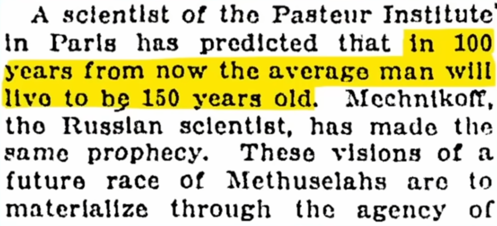

Continue to read the draft.
Log in and become a supporter to read the full article.
Become a supporter to read the full article.
Log in and become a supporter to read the full article.
Become a supporter to read the full article.
It’s late 2025, and the field of machine learning is running out of benchmarks to beat.
Chess, Go, and tic-tac-toe have fought bravely and fallen. {fill later} has saturated long ago. {fill later} has also saturated. Even ominously named Humanity’s Last Exam is growing steadily upward, from X% last year to the current record of XX%.
But those are all easy. Let’s try to find benchmarks that can offer a real challenge.
Fusion comes to mind as a classic “always 30 years away” field. The progress in fusion is glacial:
So yes, glacial, but still crawling forward - partly thanks to machine learning.
Is there anything slower?

As of 1925, the oldest-living person was Louisa Thiers, at 111.
As of 2025, It was Jeanne Calment
The longest-lived laboratory mouse died at 1,819 days old in 2005. That’s 20 years ago.
For context: in those same 20 years, we’ve seen CRISPR go from discovery to clinical trials, AlphaFold solve protein folding, and COVID vaccines developed in under a year. Meanwhile, the mouse longevity record—the single most direct measure of whether we can actually slow aging—hasn’t budged.
This isn’t for lack of candidates. Hundreds of interventions claim to “extend lifespan” in papers every year. Rapamycin, metformin, senolytics, NAD+ boosters, dietary restriction mimetics—the list grows monthly. Yet none have produced a mouse that lives substantially longer than the ones Andrzej Bartke’s lab bred two decades ago using simple genetic modifications (GH receptor knockout).
There once was a twitter account that’s dedicated to reposting hyped-up science news headlines like “scientists cured cancer” with a single added line: IN MICE.
https://www.vox.com/future-perfect/2019/6/15/18679138/nutrition-health-science-mice-news
This reflex is so ingrained, after reading some comment sections I get an impression that if you can’t uplift your lab mice into impregnable demigods, you have failed as a biologist.
So let me say this: we can’t even double the lifespan IN MICE.
When people say “who cares about mice, we want human therapies,” they’re implicitly assuming we already know how to extend lifespan and just need to scale up. But we don’t know how. We have hundreds of interventions that produce small statistical effects in heterogeneous populations, and almost no mechanistic understanding of which effects matter.
Consider the actual translation pathway: a human longevity trial requires 20-40 years and costs hundreds of millions of dollars. A mouse trial requires 3-4 years and costs perhaps $500K. The mouse isn’t a detour—it’s the only iteration loop fast enough to learn from. If you can’t reliably produce a 2,000+ day mouse (10% beyond current records), you have no business claiming you understand aging well enough to run a human trial.
Maximum lifespan is uniquely hard to game. This matters because almost every other biomarker in aging research has turned out to be gameable:
Maximum lifespan as a metric - defined by time brain death - doesn’t have this issue. It’s the metric that’s as close to “what we actually want” as you can get to in one sentence. You can’t make a mouse live to 2,000 days by improving its diet slightly or exercizing it more. You need an intervention that fundamentally alters the . Either the animal dies or it doesn’t. Every day past 1,819 is a day that literally no mouse has survived before in recorded history.
Cardiovascular decline, immune senescence, proteostatic collapse, epigenetic drift, mitochondrial dysfunction, stem cell exhaustion: these aren’t independent failure modes you can address piecemeal. They’re coupled in ways we barely understand.
Maximum lifespan is therefore the ultimate integration test. It’s the only metric that forces your intervention to work across all organ systems, all failure modes, all sources of mortality simultaneously. A mouse that lives to 2,000 days isn’t just healthier in one dimension—it has successfully delayed the entire cascade of aging-related decline.
Compare this to working on Alzheimer’s or cancer in isolation. Even if you completely “solved” Alzheimer’s—say, a drug that prevents all amyloid plaque formation—you’d add maybe 3-4 years to human lifespan on average, because people would just die of something else slightly later. The survivor would still age at the same rate; you’ve just removed one failure mode from the stack.
Whereas if you extend maximum mouse lifespan by 20%, you’ve demonstrated something that works across all aging failure modes simultaneously. That’s the kind of intervention that might actually matter for human healthspan.
If aging interventions were improving steadily—if we were on a genuine scientific trajectory—we’d expect to see the maximum lifespan record broken every few years as techniques improved. Instead we see a 20-year plateau.
This isn’t because researchers aren’t trying. The NIA Interventions Testing Program (ITP) has tested 60+ compounds since 2004 across three independent sites using thousands of genetically diverse mice. They’ve found exactly four interventions that reliably extend maximum lifespan: rapamycin (+10-15% in females), acarbose (+5-10%), canagliflozin (~5%), and 17α-estradiol (+10% in males only). None of these beat the 1,819-day record set by GH receptor knockout mice, which achieve their longevity through a genetic intervention, not a drug you can take.
Put another way: two decades of systematic screening through the most promising compounds in aging research have failed to beat a single gene knockout from 2005. That should update us significantly toward “we don’t understand aging as well as we think we do.”
The argument from first principles. Evolution optimized organisms for reproduction, not longevity. Once reproductive fitness drops off, there’s no selection pressure to maintain somatic integrity. This suggests aging is mechanistically downstream of developmental programs that are antagonistically pleiotropic: they help early in life, hurt later.
If this model is correct—and most evolutionary theories of aging assume it is—then slowing aging requires re-engineering developmental programs that evolution spent 500 million years optimizing. That’s a hard problem. You wouldn’t expect it to yield to the first few drugs tried.
The fact that we have found some interventions that work (rapamycin, genetic modifications to IGF/GH signaling) is evidence that aging is mechanistically tractable. But the fact that none of these interventions have beaten the 2005 record suggests we’re still missing something fundamental. We’ve found local optima, not the global solution.
Why mice, specifically?
Mice are short-lived enough that you can run complete lifespan studies in 3-4 years. They’re mammalian, so basic physiology (cardiovascular system, immune system, proteostasis) is highly conserved with humans. They’re genetically tractable (CRISPR works well), phenotypically well-characterized, and you can control environmental variables precisely.
The alternative models are worse for different reasons:
Mice sit in the sweet spot: short enough to iterate, complex enough to matter.
The counterfactual that didn’t happen. Imagine if the maximum mouse lifespan record had been steadily breaking. Say we’d gone from 1,819 days in 2005 to 1,950 in 2010, 2,100 in 2015, 2,300 in 2020, and 2,500+ today. That trajectory would tell us something profound: we’d identified interventions that stack, we’d know which mechanisms matter most, and we’d be justified in running human trials.
Instead we have a flat line. Twenty years, thousands of papers, billions in funding, zero progress on the hardest metric. That’s not just disappointing—it’s diagnostic. It tells us the field has been optimizing for the wrong things (publishable median lifespan effects, fashionable biomarkers) instead of the thing that actually matters (can you keep a mammal alive longer than anyone has before?).
Breaking the record wouldn’t just be symbolically important. It would be mechanistic proof that we’d learned something real about aging. Until that happens, we’re mostly just guessing.
The Methuselah Foundation created the Mprize in 2003 specifically to solve this problem: put up money ($4M by 2010) to incentivize breaking the longevity record. The design was appealingly simple: whoever produces the oldest mouse in the world wins the pot.
Two decades later, the record still stands. The prize generated exactly one meaningful payout (to Andrzej Bartke for his already-completed work), some minor incremental wins, and then… silence. Long, expensive silence.
The goal itself, maximum mouse lifespan, was’t the problem here. The problem was the incentive structure that failed to kick off an ecosystem of competitors. “All-time-champion-take-all” contests work fine for short-duration engineering prizes (build a faster car, design a better battery), but they fail catastrophically for long-horizon biological research where:
The Mprize didn’t fail because scientists didn’t want to extend mouse lifespan. It failed because it offered the wrong kind of money at the wrong time in the wrong way.
We need a prize structure that creates a sustainable ecosystem of longevity research labs—one that pays out every year even when records aren’t broken, rewards incremental progress not just moonshots, and provides enough financial predictability that serious researchers can build their careers around it.
The rest of this post proposes exactly that design. But first, we need to understand why the current crop of “new” longevity prizes (XPRIZE Healthspan, Hevolution, etc.) aren’t the answer either.
XPRIZE Healthspan: $101M, 7 years, wants therapies that make 50–80-year-olds function like they are 10–20 years younger in muscle, immunity, and cognition. “Restore … by a minimum of 10 years—with a goal of 20 years.” XPRIZE
Hevolution ecosystem: not a single prize but a firehose (they talk about up to $1B/year) for “extending healthy lifespan” and they run calls, challenges, and investigator awards that all point at healthspan, not max lifespan. Hevolution Foundation+1
Foresight / VitaDAO Longevity Prize: small ~$20–180k hypothesis and tool prizes, designed to surface ideas and datasets, not to prove you made a mammal live 40% longer. longevityprize.com+2vitadao.com+2
Methuselah in 2025: mostly organ/biofabrication (New Organ Liver Prize etc.), i.e. adjacency to longevity, not “beat Bartke’s mouse.” Methuselah Foundation+1
So the whole crop drifted from “one hard number: age of oldest mouse” to “bundle of clinical function scores in old humans.”
Composite endpoint: muscle + immune + cognitive. Any composite can be optimized by pushing the easiest subscore. Sarcopenia endpoints are especially tractable (training, myostatin-ish drugs, even good PT). Cognition and immune are noisier. So teams will bias toward the limb that gives the most reliable delta in 12 months, not toward systemic aging reversal. That’s textbook metric gaming. Prize page basically invites it. XPRIZE+1
Short horizon: semifinal trials Aug 2025–Mar 2026. Aging is slow; 7–8 months is behavior + inflammation + water weight. You can move that without touching survival odds at 85. Renascience
Participant selection: choose unusually healthy 60-year-olds who have room to improve on strength tests but already low mortality risk; you get big functional gains with no way to tell if you bought extra years or just reversed disuse. That’s classic selection-gaming.
Stacked interventions: nothing stops a team from doing drug + supervised exercise + protein + sleep coaching; almost any coached multimodal regimen will improve the panel. That proves you can organize adherence, not that you slowed Gompertz slope.
So: metric surface is wide, easy to optimize locally, and not tied to actuarial endpoints. Mprize, for all its problems, was “what age did the animal die?” which you cannot cosmetically inflate.
Let’s unpack how each prize can be gamed. Remember, the metric me and you actually care about is decreasing the mortality risk (that is, dying later). Any metric that doesn’t obviously measure death events is merely a proxy that deserves scrutiny.
As an example of the field that didn’t learn this lesson until too late, look at immune modulation of sepsis.
The 2023 review of sepsis immune regulators states: “To date, no drugs have been approved for treating sepsis, and most clinical trials of potential therapies have failed to reduce mortality.” A concerningly named Global Sepsis Alliance confirms:
30+ years of “we identified a cytokine / coagulation factor / innate immune pathway; now we will fix sepsis.” This culminated in the public withdrawal of Eli Lilly’s Xigris in 2011 because PROWESS-SHOCK trial did not show survival benefit.
Is aging research currently in the same “premature translation to healthcare” position? Some gerontologists believe so. A paper titled “Inflated expectations” observes:
One evening in 1997, in a pub in Cambridge, UK, David Klenerman and Shankar Balasubramanian worked out the basic principles of high-throughput Illumina DNA sequencing, based on flow-cell chemistry. The realization of this revolutionary technology required a subsequent large-scale, 10-year-long translational research effort to develop the first next-generation sequencers. To have made such a translational push to develop high-throughput sequencing in 1987 would presumably have been premature; but with hindsight one can safely say that in 1997 the time was ripe for it. One may say the same of the launch of the US$10M XPRIZE in 1996 to whoever could develop the first commercially viable, reusable vehicle to carry passengers into space. This challenge, though difficult, was theoretically feasible thanks to the existing knowledge of physics and engineering—and the prize was won in 2004 by the developers of the SpaceShipOne spaceplane.
What, then, is the equivalent of that 1997 breakthrough in flow-cell chemistry that has ignited the imagination of the backers of the XPRIZE Healthspan, Calico, and Altos Labs? There seemed no clear answer to it at the Riyadh meeting. If so, this suggests that the recent rush to translation is premature. In turn, this begs the question: how is it that so many researchers and investors believe that the time is ripe for this big translational push?
For aging research to not end up where sepsis research is now, we need to ask: why could a “biomarker” proxy fail to correlate with mortality?
Not all functional impairment is detrimental to survival. Cellular senescence is the classic example: senescent cells are functionally impaired (they don’t divide, secrete inflammatory factors) but they’re also tumor-suppressive. Clearing them improves some health metrics but the mortality effect is unclear—you might trade cancer risk for other pathologies. Similarly, a drug that improves grip strength through muscle hypertrophy without addressing systemic aging could look great on a healthspan dashboard while doing nothing for lifespan.
Researcher degrees of freedom. This is the standard problem in statistics where multiple outcome measures let you cherry-pick whichever endpoint moved favorably. With a composite metric (muscle + immune + cognitive), teams can optimize whichever subscore responds most easily to their intervention, then claim success. If your drug improves cognition but worsens immune function, you emphasize the cognitive gains and explain away the immune results as “assay variability.” The more endpoints you track, the more likely at least one will hit significance by chance.
The candidate-biomarker era. Remember the candidate-gene era in genetics? Thousands of papers claiming gene X causes disease Y, based on small samples and flexible analysis. Most didn’t replicate. The field learned its lesson with GWAS: pre-registered hypotheses, genome-wide significance thresholds, mandatory replication.
We’re now in the candidate-biomarker era for aging. Researchers propose that DNA methylation patterns, or mitochondrial function, or telomere length predicts mortality—and then design interventions to optimize that specific biomarker. But if the biomarker is only weakly predictive, or if the intervention affects the biomarker through off-target mechanisms, you get the same replication crisis. The epigenetic clock field is already seeing this: clocks trained on different datasets give conflicting age estimates, and some interventions “reverse” clock age without affecting actual mortality.
The problem isn’t that biomarkers are useless—they’re great for hypothesis generation and mechanistic studies. The problem is treating them as endpoints when we don’t have validation that improving the biomarker extends lifespan. That’s the sepsis trap: decades spent optimizing inflammatory markers that didn’t save lives.
Lifespan itself is the ultimate validation. You can’t game your way to a 2,000-day mouse without actually delaying the aging process.
The Mprize taught us that winner-takes-all doesn’t work for multi-year biological research. But what does? Let’s sketch out a prize structure that creates a sustainable ecosystem of longevity labs—one that pays out predictably, rewards real progress, and can’t be easily gamed.
The core insight: Research labs need cash flow, not lottery tickets.
A lab running a 4-year mouse lifespan study needs to cover salaries, facility costs, and supplies every quarter. If the only payout comes after you beat a 20-year-old record—and only if you beat it—most labs can’t afford to play. You need grants, other revenue streams, or a trust fund. That means only established, well-funded labs can participate, which kills the innovation that comes from hungry upstarts willing to try weird ideas.
Solution: Pay out every year to the top-performing labs, even when no new records are broken.
Here’s the mechanism: Every December, identify the five longest-lived mice that died in that calendar year. Pay the labs that produced them. This creates predictable revenue that labs can plan around, budget for, and use to justify hiring postdocs who specialize in longevity interventions.
Why “died in that calendar year” matters: This closes the obvious gaming vector where labs keep claiming their mouse is alive indefinitely to maintain prize eligibility. If payouts only happen when the mouse dies, there’s strong incentive to report deaths honestly—because that’s when you get paid. More on gaming vectors later.
Independence from record magnitude: Notice we’re not paying based on how much longer the mouse lived compared to last year’s winner. We’re just paying the top five each year. This is deliberate. If payouts scaled with improvement, you’d get feast-or-famine dynamics: huge prizes when someone makes a breakthrough, nothing when progress is incremental. That’s exactly the volatility we’re trying to avoid.
Think of it like a racing series with points every season. Formula 1 doesn’t only pay out when someone breaks the track record; they pay positions 1-10 every race. That keeps teams funded through the season, which means they can invest in R&D for next year’s car. Same principle here: steady payouts mean labs can invest in next year’s intervention pipeline.
The stakes: How do you split the pot without making it worthless?
If you pay everyone equally, the prize gets diluted to meaninglessness. A dozen labs each getting $50K/year isn’t enough to sustain serious research programs. But if you pay only the winner, you’re back to Mprize dynamics: 11 labs got nothing, can’t make payroll, shut down.
Solution: Heavy concentration at the top, with meaningful runner-up prizes.
Here’s a concrete split that works:
Why this specific structure?
First, the 50/50 split between winner and runners-up creates two distinct incentive regimes. Labs with the most promising interventions gun for #1 because that’s where the big money is. Labs with solid-but-not-revolutionary interventions can still make payroll by landing in the 2-5 range. This creates a healthy ecosystem: a few well-funded leaders pushing the frontier, surrounded by a larger pool of competent labs that can pivot to new approaches when one of the leaders figures something out.
Second, the 12.5% runner-up prizes are equal. This avoids gaming around finishing 2nd vs 5th. If you paid 20%, 15%, 10%, 5%, labs would waste effort trying to predict whether their mouse would finish 3rd or 4th and potentially withhold data to avoid helping competitors. Equal runner-up prizes eliminate that strategic layer.
Concrete numbers: Let’s assume a $5M annual budget (comparable to what Mprize accumulated over 7 years, but distributed annually):
Is $2.5M enough to sustain a serious longevity research program for a year? Yes, comfortably. That covers 3-4 postdocs, a lab manager, facility costs for a 500-mouse cohort, reagents, and overhead at a typical university (50% indirect rate). You could run two concurrent intervention studies (each taking 3-4 years) with that budget, meaning continuous pipeline.
Is $625K enough for runner-up labs? It’s tight but workable. That’s 1-2 postdocs plus animals, enough to keep a small lab alive and iterating. Critically, it’s enough that a PI can justify specializing in longevity research rather than diluting effort across multiple grants.
Scaling the pool: The math above assumes 5-10 actively competing labs. What if you get 30 labs? Then either (a) raise the prize pool proportionally, (b) keep the same pool and accept that bottom-ranked labs don’t get paid (they knew the odds), or (c) expand to top-10 payouts with a steeper taper (50% to #1, then 5% each to 2-10).
Option (c) is probably optimal at scale. It maintains the leader/follower ecosystem dynamic while letting more labs participate. But you don’t want to dilute so much that landing in the top 10 feels like participation trophy. If prize money can’t cover a postdoc salary, it’s not moving the incentive gradient.
The failure mode: Conflating incremental progress with moonshots.
The Mprize conflated these: it paid for all-time records, which meant no one got paid for 15 years because no one beat Bartke. That’s insane. Incremental progress is how science works. You want to reward the lab that got a mouse to 1,750 days with a promising new rapamycin analog, even if it didn’t beat 1,819.
Solution: Two prize structures, different funding sources.
Annual prizes (main mechanism): Paid from recurring operational budget. Top-5 longest-lived mice each year. Amounts specified above. This is the sustainable research ecosystem; it runs forever regardless of whether records are broken.
All-time record bonus (moonshot mechanism): Separate endowment, only pays out when someone beats the standing all-time record (currently 1,819 days). This is the “holy shit someone actually did it” pot.
Why separate them?
Financial sustainability: Annual prizes come from recurring revenue (foundation grants, philanthropic donors, maybe government if we’re lucky). You need predictable inflows to match predictable outflows. If you paid big money every time someone broke a record, you’d need a huge reserve or you’d go bankrupt the year three labs simultaneously beat 1,819 days.
Behavioral incentives: Annual prizes reward trying hard and doing good work. All-time bonuses reward taking big swings. You want both. If you only had the annual prizes, labs might plateau around 1,700 days because that’s “good enough” to land top-5 most years. The all-time bonus says “yes, but what if you tried to get to 2,000?”
Signaling: When someone finally breaks 1,819 days, that’s a huge scientific milestone. It deserves a huge financial response. By separating that payout, you make it legible to the outside world: “This is the intervention that worked. Everyone pay attention.”
Concrete moonshot structure:
Set aside, say, $20M in an endowment at founding. Invest conservatively (bonds, diversified equities, whatever fiduciaries recommend). The endowment only pays out when someone verifiably beats the all-time record. When that happens:
Once paid, replenish the endowment with new fundraising. The idea is that a genuine record-breaker (e.g., a mouse living to 2,000+ days) is such a landmark result that you can go back to donors and say “This worked. Fund the next phase.” Refilling the endowment shouldn’t be hard after a real success.
Why taper the bonus with magnitude? Because bigger records are harder and more scientifically meaningful. A mouse living to 1,900 days (4.5% gain) is impressive but might be statistical noise or small optimization. A mouse living to 2,100 days (15% gain) is a fundamentally different kind of intervention—it means you found something qualitatively new.
The question: Should prizes go to the longest-lived mouse currently alive, or the longest-lived mouse that died this year?
Answer: Always pay for deaths, never for living animals.
Why?
Gaming prevention: If you pay for living animals, labs have every incentive to claim their mouse is still alive even when it’s not. You’d need constant third-party verification (expensive, invasive), and even then you open fraud vectors around “substitution” (swap in a younger mouse when the old one dies, hope no one notices).
Paying only upon death eliminates this. The lab wants to report the death, because that’s when the check arrives. Sure, they might delay reporting by a few days if the mouse dies right before a calendar boundary (more on this later), but you can design around that with eligibility windows.
Biological clarity: Death is an objective endpoint. A mouse is either alive or not. There’s no ambiguity around “how alive is it?” or “does it still count if it’s paralyzed and tube-fed?”. By contrast, paying for living animals invites endless definitional fights around euthanasia criteria, humane endpoints, and quality of life.
Alignment with science: The goal is lifespan extension, not lifespan reporting. We want labs optimizing for interventions that keep mice alive longer, not optimizations for paperwork that make deaths invisible. If the prize only comes after natural death (or humane endpoint), labs focus on the biology, not the reporting.
Practical workflow:
Objection: What if a lab has a mouse that’s 1,900 days old right now, but it doesn’t die until next year?
That’s fine. They report the death next year, compete for next year’s prize. This might feel unfair (“I already have the oldest mouse alive, why do I have to wait?”), but it prevents the gaming vector. If you allowed “currently alive” claims, you’d have labs submitting prize applications for mice that turn out to die a month later at 1,600 days.
But wait—doesn’t judging by death date create the opposite problem? Yes, if prizes were awarded based purely on when the death is reported, labs would have perverse incentives to delay reporting deaths strategically. A mouse that dies on December 31st at 1,850 days might not get reported until January 2nd, letting it compete in next year’s pool when competition might be weaker.
Solution: Judge by “last confirmed alive” date, not death report date.
Here’s how it works:
Registration: Labs submit mice at 30 days of age (just-weaned). Each mouse gets biometric ID (retinal vessel scan) to prevent later substitution. Submit as many mice as you want—we want large-n studies.
Status updates: Labs can confirm mice are alive anytime they want via telepresence with third-party verification. Each check-in creates a timestamped “last seen alive” record. No mandatory frequency—if you think your mouse will be competitive, you’ll check in more often to maximize your final timestamp.
Death reporting: When a mouse dies, report it within 7 days with the date. The prize ranking uses the last confirmed alive date from your most recent check-in, not the death report date.
Annual ranking: At year end, rank all mice by their final “last confirmed alive” timestamp among mice that died that year. Top 5 get paid.
This design:
The tradeoff: Labs might euthanize very old mice near year-end to lock in that year’s competition rather than risk rolling over. But this is acceptable—it shortens lifespans (conservative direction) and doesn’t create fraud.
The threat model: How do we know the mouse that died at 1,900 days is actually the same individual that was registered at 30 days?
Potential fraud vectors:
Solution: Biometric registration at 30 days.
At registration (30 days post-birth), each mouse undergoes:
This biometric profile is stored by the third-party verification committee and linked to that specific mouse ID.
Verification when it matters: Labs scan the mouse’s biometric ID (retina/ear vessels) via telepresence video call with a committee member whenever they want to create a timestamped “still alive” record. The scan matches against the stored profile. Do this as often or rarely as you want—it’s your call whether the mouse is worth tracking closely.
Why 30 days? Earliest age mice can be individually handled after weaning. Limits birth-date fraud to less than one month—negligible given mice live 500-1,800+ days.
Species verification: DNA genotyping at registration confirms Mus musculus. Hybrid vigor from outcrossing to other species (M. spretus, etc.) would be detectable in genotype and grounds for disqualification—though realistically, if someone produces a hybrid that lives substantially longer, that’s scientifically interesting and might warrant a separate prize category.
What about natural genetic variation? Different mouse strains (C57BL/6, DBA/2, etc.) and genetic knockouts are allowed. The prize specifically wants to incentivize finding interventions (genetic or pharmaceutical) that extend lifespan. If someone breeds a longer-lived strain, that’s progress.
Big cohorts: Not a loophole—we actively want to incentivize this. Running 1,000-mouse cohorts with proper statistics is good science. Register all of them at 30 days. Track whichever ones look promising. If you end up with the top three longest-lived mice that year, you win three prizes. Large-n studies should be rewarded, not penalized.
Co-PIs and institutional gaming: If two PIs at the same institution both submit mice, that’s fine. We don’t review lab notebooks or funding sources. If they’re gaming it by splitting one cohort across fake collaborations, so what? The mice still lived that long. The data is still valid. We care about lifespan records, not organizational charts.
Ownership exchange: Labs sometimes need to transfer mice between institutions (PI retirement, facility closure, mouse line rescue). We permit this, but with restrictions:
Death non-reporting: If a lab’s mouse dies but isn’t competitive (say, 1,200 days in a year where #5 is 1,700 days), they might not bother reporting. This is fine—we only care about the top performers. However, labs that consistently fail to report deaths may be flagged in future years as potentially unreliable and subject to additional scrutiny.
Sabotage: Labs in the same facility might develop rivalries. A malicious actor could poison competitors’ mice, cause “accidents,” or bribe facility staff.
Countermeasures:
Realistically, sabotage is unlikely because the downside (career annihilation, criminal charges) vastly outweighs the upside (at most $2.5M, split with institution overhead). But the verification infrastructure needs to exist to deter it.
Endpoint violations: IACUC protocols require humane euthanasia at defined endpoints (large tumors, >20% weight loss, paralysis, seizures). A lab might be tempted to keep a mouse alive past these endpoints.
Countermeasure: Trust the IACUC. Each institution has veterinary oversight and ethical review. We’re not going to demand necropsies, pathology reports, or override local IACUC decisions. If a lab’s IACUC approved their endpoints, that’s good enough. Labs with consistently suspicious results (e.g., mice dying with obvious welfare violations visible on video) can be flagged, but we start from a position of trust.
Why? Because demanding extensive data sharing will turn away secretive industry labs (Calico, Altos, pharma companies). We want to know how long their mice live, not audit their entire research program. Lower the barrier to participation.
Corruption: What if prize committee members favor certain labs, accept bribes to manipulate verification timing, or falsify biometric records?
Countermeasures:
No system is fraud-proof, but these layers make large-scale corruption expensive and detectable.
Branding matters. Longevity research is off-putting to many research biologists because of its association with amateur biohackers, snake oil supplements, blood-transfusing billionaires, and keeping terminal patients on life support past any reasonable quality of life. The field has an image problem.
One solution: rebrand away from “who can keep flesh alive longest” toward “exemplary animal welfare in lifespan studies.” Instead of celebrating raw survival numbers, emphasize humane endpoints, veterinary oversight, and the scientific rigor of the verification process. The prize could even be named something like the “Humane Longevity Research Prize” to signal that animal welfare is central, not incidental.
This might also help with gender balance. More women work in wet lab biology than in STEM generally, but lifespan extension is seen as more male-skewed than most wet lab biology topics, which has been observed to cause friction. Emphasizing welfare and rigorous methodology over transhumanist moonshots might make the field more welcoming to researchers who care about the science but are turned off by the Silicon Valley immortality aesthetics.
Regulatory arbitrage. Some countries have more permissive animal research standards than others. Does this create an unfair advantage for labs in those jurisdictions?
Yes, and that’s a feature, not a bug. We want to incentivize researchers to set up labs in countries that have carved out reasonable regulatory exceptions for aging research, and we want to create pressure on overly restrictive countries to reconsider policies that block scientifically valuable lifespan studies. If Country A requires euthanasia at any sign of tumor growth while Country B allows tumors to progress to IACUC-defined endpoints, Country B labs will have an advantage. That’s the market signal working as intended.
The verification infrastructure (mandatory necropsies, veterinary oversight, public audit trails) ensures that “permissive” doesn’t mean “abusive.” Labs still have to justify their endpoints and demonstrate humane care. But we’re not going to impose the most restrictive country’s standards globally—that would just handicap everyone.
Log in and become a supporter to read the full article.
Become a supporter to read the full article.